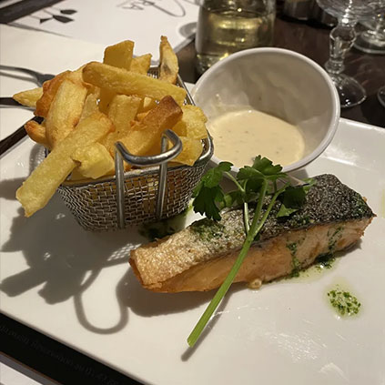
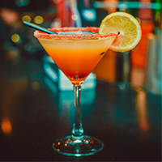
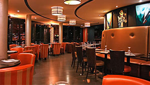

CamilleGoogle
★★★★★
Service rapide, equipe agreable et bonne adresse pour dejeuner sans perdre de temps.

Le Niagara Café réunit les codes du bar de quartier, du restaurant de brasserie et du rendez-vous afterwork dans une même adresse à Courbevoie.
On y vient pour déjeuner, prolonger un échange autour d’un verre, partager quelques assiettes ou retrouver un lieu pratique à deux pas de La Défense.
Vous cherchez un restaurant à Courbevoie ? Consultez la page dédiée.

Du petit-déjeuner au dessert, la carte Niagara se lit d'un coup d'œil et donne envie de réserver, de déjeuner sur place ou de revenir en afterwork.
Une adresse qui change de rythme au fil de la journée, du café du matin au verre partagé après le bureau.
Le comptoir Niagara accompagne les rythmes du quartier à chaque moment de la journée: café avant la première réunion, apéritif improvisé, cocktail de fin de journée ou verre qui prolonge la conversation.
De 17h à 21h, le Niagara prend une tonalité plus festive: on s'y retrouve facilement entre collègues pour relâcher la pression, partager quelques assiettes et lancer la soirée sans changer de quartier.

Une brasserie chaleureuse pour les déjeuners d'affaires, les repas entre amis et les envies simples, généreuses et bien exécutées.
Un lieu vivant pour le café, l'apéritif, le happy hour et les rendez-vous spontanés à deux pas de La Défense.

Déjeuners d'équipe, anniversaires, pots de départ, cocktails ou soirées privées: Niagara se privatise dans un format souple, convivial et immédiatement séduisant pour vos invités.
En fin de page, ce bloc peut faire office de preuve sociale avec une presentation plus premium, plus dense et plus claire a parcourir sur desktop comme sur mobile.
★★★★★ 4,4 de moyenne Google et 4,3 sur TheFork, en presentation maquette pour valider le rendu.
Service rapide, equipe agreable et bonne adresse pour dejeuner sans perdre de temps.
Terrasse pratique et lieu simple pour prendre un verre apres le bureau a Courbevoie.
Reservation facile, accueil efficace et cadre chaleureux pour un repas entre collegues.
Adresse pratique pres de La Defense avec une offre claire pour le midi et l'afterwork.
Bonne option pour un diner simple, equipe souriante et service regulier.
Lieu vivant, cocktails propres et ambiance facile pour retrouver des collegues.
Une table facile a reserver avec un bon rapport entre emplacement, accueil et confort.
Bon point de rendez-vous pour un dejeuner d'affaires ou un verre en fin de journee.